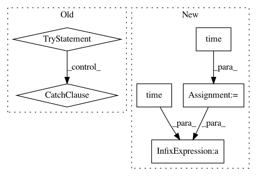

b048efa4f956b80266942caea6ee8b4311e1d17a,autokeras/classifier.py,ClassifierBase,fit,#ClassifierBase#Any#Any#Any#Any#Any#,119
Before Change
signal.signal(signal.SIGALRM, signal_handler)
signal.alarm(time_limit) // Ten seconds
try:
while True:
p = multiprocessing.Process(target=run_searcher_once, args=(x_train, y_train, x_test, y_test, self.path))
p.start()
p.join()
except TimeoutError:
if self.verbose:
print("Timed is up!")
return
def predict(self, x_test):
Return predict result for the testing data.
Args:
After Change
p.start()
p.join()
start_time = time.time()
while time.time() - start_time <= time_limit:
p = multiprocessing.Process(target=run_searcher_once, args=(x_train, y_train, x_test, y_test, self.path))
p.start()
// Kill the process if necessary.
In pattern: SUPERPATTERN
Frequency: 3
Non-data size: 6
Instances
Project Name: keras-team/autokeras
Commit Name: b048efa4f956b80266942caea6ee8b4311e1d17a
Time: 2018-04-08
Author: jin@tamu.edu
File Name: autokeras/classifier.py
Class Name: ClassifierBase
Method Name: fit
Project Name: automl/auto-sklearn
Commit Name: a9810b5f0f55afbd36cd1f919c23e803a4810585
Time: 2017-02-13
Author: feurerm@informatik.uni-freiburg.de
File Name: scripts/03_calculate_metafeatures.py
Class Name:
Method Name: calculate_metafeatures